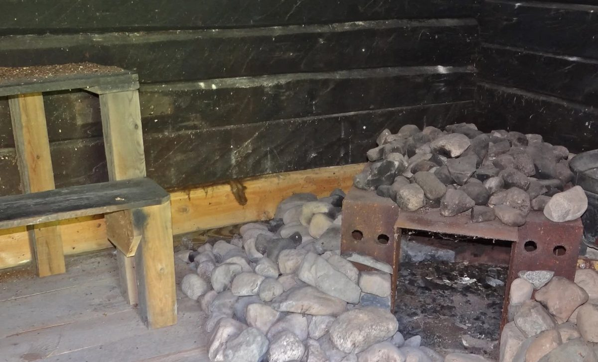
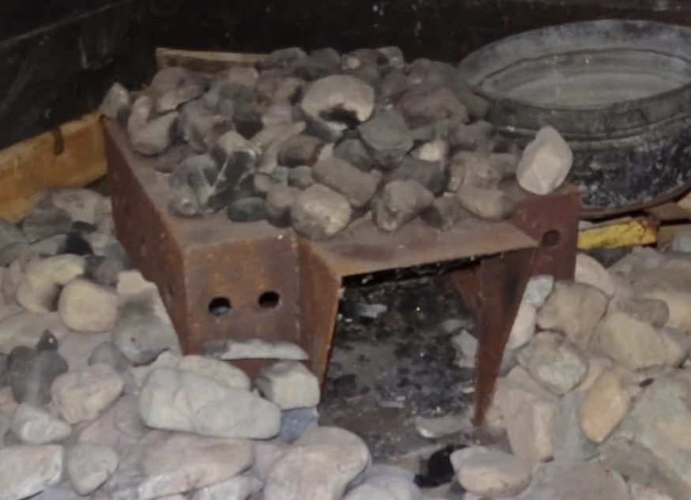

Notes by Norm Jarva and Harold Johnson regarding the summers of 2008 and 2009 to repair the Savu Sauna at the Wirtanen Pioneer Farm.

Taking stock, spring 2008
At the April 2008 Annual Meeting of the Friends of the Wirtanen Pioneer Farm, Harold Johnson and Norm Jarva volunteered to be involved with the repair project. It was understood that there is funding available to purchase materials and hardware as needed.
Harold and Norm made several visits for preliminary inspection of the existing building to determine a process of priority in tasks to commence on the project. Numerous lower course timbers on all four walls were found to be rotted due to ground contact, moisture, lack of ventilation, and damage by carpenter ants and other insects. Photos were taken before, during, and after to create a record of the entire project.
It appeared that some attempts had been made at some time to maintain the place covering some of the partial damage. This probably added to problems as the boards would hold in any moisture from rain or ground absorption by blocking air circulation. Other sections of the exterior held tar paper nailed over the original timbers; that serves for little protection also.
We made measurements of the short and long walls to calculate a count of timber that need to be replaced. Full length timbers on the three sides and shorter timbers making up the door and window walls were needed. We decided 18 timbers at 6 inch by 8 inch by 14 feet was a minimum number necessary. But to allow for error and unforeseen we determines 21 or 22 timbers would be best.
From the interior the dressing room bench and the steam room benches were removed intact with the intention to re-install them and keep the integrity of Eli’s original structure. The benches have a blackened patina of soot from years of usage of the smoke sauna that cannot be easily duplicated.
The wooden floor sections in the steam room were found to not be original. However, this ‘newer’ floor had been there long enough to be damaged over time from ground water and steam and sauna water; the floor was removed to be replaced in the future using better materials and safer construction methods with ventilation.
The sauna “stove” was a three foot diameter section of steel road culvert. It was rusted, corroded through, and not re-usable. Numerous odd pieces of scrap steel were mixed in with the stove heating rocks. All were discarded. Many, many buckets of ash, clay soil, pieces of metal, and stones were added atop the ‘kiwas’ had pushed the original stones down into the clay and dirt floor that was around the heating area of the room.
Seven Norway pines
For the replacement timbers no easy access to trees on the Pioneer Farm was available. In July of 2008, Norm Jarva donated seven large mature red Norway pine trees from his Lakeland property to be made into timbers. Harold Johnson, Jack Huhta, Bill Marolt, Gene Saumer, Jim Nesselroad, Kraig Johnson, and Norm Jarva cut and limned the trees. Mike Tynjala donated the use of his log hauler truck with a “cherry-picker” and his skills to load the 18, 14-foot lengths onto a goose-neck trailer and truck donated for use by Keith Nelson and driven by Keith’s son, Aaron.
Aaron delivered the load to John Latola’s sawmill outside of Aurora. John did the sawing to turn the 18 lengths into the 6x8x14 timbers for use to replace the rotten timbers in the wall sections of the savu sauna.
The timbers were delivered to the sauna site by Keith Nelson for the construction to move forward. (Keith made numerous trips over the two summers to deliver timbers then the rough-sawn boards used in the reconstruction.)
Latola ably sawed additional one inch boards from those sections of logs. These boards later were used to frame the doors and windows of the sauna. (And some of them were used for the soffits and eaves when the roof was replaced on the main house.)
Learning Eli’s corners
In July 2008 Martin Mattson, a local craftsman experiences in construction of log buildings in the Finnish style, conducted a hands-on workshop at the sauna site. Using sections of spare timbers, Martin showed Harold and Norm and the others in attendance how he measures, marks, and basically whittles the compound mitered corners for the ends of the timbers to fit. The angle of the flat cut is about 17 degrees leaving the highest point of the cut on what will be the outside corner. The lowest point of the cut is toward the body of the timber. The two remaining corners are one slightly higher than the lower with the other slightly lower than the higher – each at an opposing corner of the highest and lowest.
The opposing end of the timber has a mirror image of the compound angle cuts and the bottom end of the timber has a similar compound miter to allow each course of timber to fit tightly while directing water runoff on the exterior of the building down and toward the center of the exterior wall.
Raising the walls
Once the interior was gutted, Harold and Norm, with help on occasion from others, lifted the upper half of the walls of the sauna by bolting 6 inch by 6 inch by 4 foot timber pieces to the interior walls. Using hydraulic 6 hand jacks the solid portions of the upper walls were raised taking the weight of the building off the lower walls. Those timbers to remain in place were freed from the lower rotten pieces allowing for removal. All during the process of removal of the original rotted timbers it was discovered (to our dismay) that Wirtanen certainly used numerous, and VERY large, nail to spike his dovetail joints together. In addition, Wirtanen “pegged” his timbers together with one inch diameter pieces 12-14 inches long in two center areas of each and every horizontal timber he put in place.
Dis-assembly of the lower courses made for findings of the “creative” use by Wirtanen of various cast off items to chink the spaces between his original sauna timbers. Harold and Norm removed many yards of strips of oakum, gunny sacks, and even old “long-handles” that Eli had inserted between the timbers in his efforts to maintain heat in his sauna and possibly keep out cold drafts.
Rebuilding from the ground up
Once the building was raised in July of 2008, work was begun to remove the lower timber on the rear of the sauna. This became our starting point as it was probably Eli’s first laid timber for his building since the first course of side timbers laid atop this timber as well as the one in the front. The lowest bad timbers on the front and two sides were taken out. These all broke apart into pieces and sawdust and scrap due to their condition. Insect nests were frequently found.
Trenches were dug in the soil under the walls of the building into which gravel was dumped in order to prevent ground moisture from shortening the life of the replacement timbers. Green treated timbers were set on the gravel to serve as a long-lasting foundation before the wall timber work began. The four upper ends of the front and rear green treat timbers were cut down to mitered dovetails at ‘approximate’ matching angles of those above so that the last courses of full replacement timbers would tie in correctly in the direction of Eli’s timbers which we were leaving in place.
In creating the compound angled dovetail joints on the timbers our measurements of Eli’s carved timber ends showed that Eli had quite the “good eye” in maintaining a close standardization for his jointing construction. But as we found none of them were truly the same, our attempts to closely duplicate his dovetails involved the repetitious tasks of marking approximate lines, using a broad-axe to do more detailed wood chipping, and utilizing an old-time draw knife to shape the dovetail slopes so they would match that dovetail above and below. Most timbers were cut, put in place to check the fit of the joints, then removed one, two times, or more on occasion, before we met an acceptable product that came close to Eli’s. It proved to be a long, slow process over the summers of 2008 and 2009.
Exterior work on the sauna was fully dependent on the weather at this time and the summer of 2008 moved into fall. We ceased work for 2008 in October.
The progress over the summer of 2008 included:
- Gutting the interior steam room and dressing room (saving what was original that had potential for re-installation)
- Tearing off the various materials that had been added onto the original building in attempts to slow deterioration.
- Bolting on temporary jacking timbers inside the sauna to raise the building.
- Removal of bad timbers on three sides of the building.
- Installation of drain tile underground in a trench around the perimeter of the building to divert groundwater away.
- Replacement of a few timbers (with our hands-on learning of the art of angled and mitered ends.)
The last timber, 2009
At the end of August 2009, the final replacement timber was installed. It forms the sill of the dressing room window in front. This was a milestone moment in the project! However, we still lacked an interior and numerous details remained to be done. Our stated goal was to have the savu sauna completed for Fall Festival Day, September 12, 2009.
Green treated 4×4’s make up the interior joists under the steam room floor. These were attached to the treated timbers that make up the “foundation” of the building. The planks that form the floors of the two rooms were those sawed by John Latola from the original Norway pines. Green-treated 2×4’s were used to support those boards installed for the dressing room floor.
The seating benches and the bucket shelves in the steam room are Eli’s originals. As the lower supports for these were quite water damaged, new pieces were installed.
The bench in the dressing room is original as is the small shelf by the door.
The exterior of the building was treated with a water-based mix using Borax soap to prevent insect damage. After final exterior work a commercial wood treatment was sprayed on the sides in the hope of preserving the solid wood timbers of Wirtanen and delaying weather damage of the replacement timbers.
We expect the replacement timbers to gray naturally in a year or two blending with the original construction of Eli Wirtanen.
Harold’s stove
Harold fabricated the replacement sauna stove in his garage at home.
I welded the sauna stove from 3/16 th inch and 1/4 inch plate steel. The stove weighs about 100 pounds; it is 28 inches square and 19 inches tall. I cut 35, 1 inch 3/4″ holes on the sides and top to allow the heat and smoke to heat the rocks which were piled atop and around the stove. The stove has a welded shelf on the one side to allow for radiant heating of a tub of water.


Thank you
We did not keep accurate records of the volunteer man-hours for the summer of 2008. However for the summer of 2009 I recorded 211 hours donated by volunteers.
The volunteers who were able to give varied amounts of their time included: Bob Kochendorfer of Hoyt Lakes, Kraig Johnson of Aurora, Jack Huhta of Hutter, and Don Maki of Fayal Township/Eveleth. Their assistance proved to be very valuable with this project and we thank them.
As the goal was completion of the building by the 2009 Festival Day, we were assisted by Mickey Nissila who gave hours and hours of work time and offered many suggestions when the floors and benches were replaced. Mickey lent his skills in the window framing and replacement of the doors over several days. He delivered the rocks that form the “kiwas” and aided in placing those – bucket by bucket.
We wish to acknowledge the donations of Bradach Lumber of Aurora.
Norm Jarva and Harold Johnson